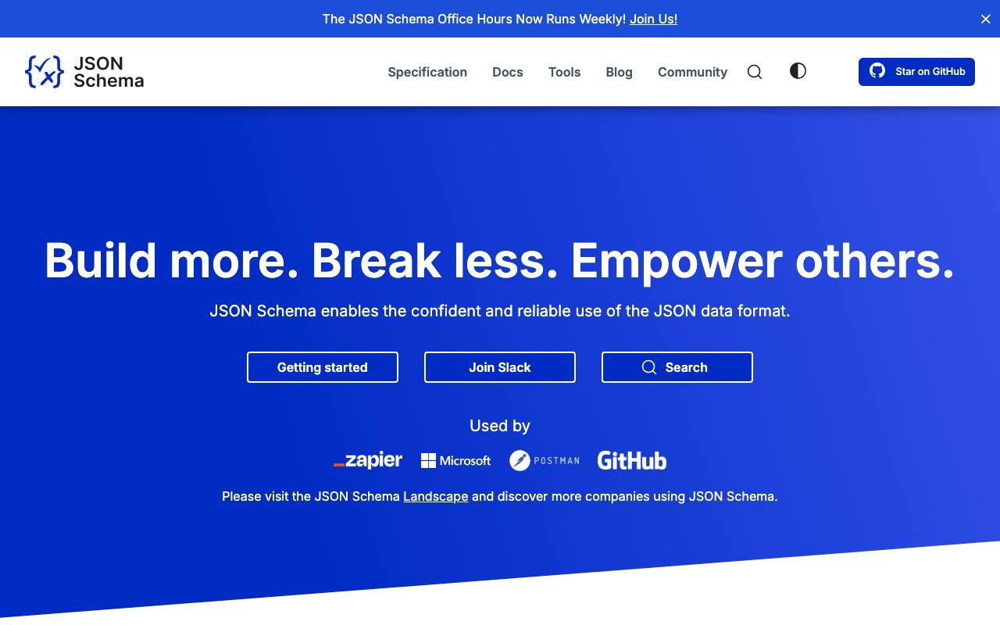

Справочник «Стандарты и сертификаты» · тема 3
Глава 8
OpenAPI и форматы
данных
Программы обмениваются данными в нескольких стандартных форматах, а сами интерфейсы описывают по стандарту OpenAPI. В главе разобраны описание API, схема данных, формат ошибки и три формата файлов, которые встречаются чаще всего: JSON, CSV и YAML.
- Документы
- OpenAPI Specification 3.1 · JSON Schema 2020-12 · RFC 9457 · RFC 4180 · YAML 1.2
- Уровень
- Средний
- Где встречается
- HTTP API, выгрузки, настройки сервисов
- Зачем это знать
- Чтобы описать данные так, чтобы их проверяла программа
§1OpenAPI: описание API в файле
OpenAPI Specification — формат описания HTTP API: адреса, методы, параметры, тела запросов, коды и схемы ответов. По файлу строят документацию (Swagger UI, ReDoc), проверяют ответы сервера и генерируют код клиента. До 2016 года спецификация называлась Swagger; теперь это имя носят инструменты.
openapi: 3.1.0
info:
title: Service Desk API
version: 2.5.0
paths:
/tickets/{ticket_id}:
get:
summary: Получить заявку
operationId: getTicket
parameters:
- name: ticket_id
in: path
required: true
schema: {type: integer, minimum: 1}
responses:
'200':
description: Заявка найдена
content:
application/json:
schema: {$ref: '#/components/schemas/Ticket'}
'404':
description: Заявки с таким номером нет
content:
application/problem+json:
schema: {$ref: '#/components/schemas/Problem'}
components:
schemas:
Ticket:
type: object
required: [id, subject, status]
properties:
id: {type: integer}
subject: {type: string, maxLength: 200}
status: {type: string, enum: [new, in_progress, done]}
created_at: {type: string, format: date-time}| Раздел | Что в нём |
|---|---|
| openapi | версия спецификации, по которой написан файл |
| info | название и версия самого API |
| paths | адреса и операции: метод, параметры, тело запроса, ответы |
| components | общие схемы данных, на которые ссылаются через $ref |

§2JSON Schema
JSON Schema — язык описания, какой должна быть структура JSON: типы, обязательные поля, допустимые значения. По схеме программа проверяет данные до того, как с ними работать.
{
"$schema": "https://json-schema.org/draft/2020-12/schema",
"type": "object",
"required": ["subject", "email"],
"properties": {
"subject": {"type": "string", "minLength": 3, "maxLength": 200},
"email": {"type": "string", "format": "email"},
"priority": {"type": "string", "enum": ["low", "normal", "high"], "default": "normal"}
},
"additionalProperties": false
}from jsonschema import validate, ValidationError
try:
validate({"subject": "Не работает вход", "priority": "urgent"}, schema)
except ValidationError as e:
print(e.message)
# 'email' is a required property
§3Описание ошибки по RFC 9457
RFC 9457 «Problem Details for HTTP APIs» задаёт единый вид тела ответа об ошибке. Тип содержимого — application/problem+json.
HTTP/1.1 422 Unprocessable Content
Content-Type: application/problem+json
{
"type": "https://kursblinovskoy.example/problems/email-taken",
"title": "Адрес почты уже занят",
"status": 422,
"detail": "Ученик с адресом petya@mail.example уже зарегистрирован.",
"instance": "/signup"
}| Поле | Смысл |
|---|---|
| type | адрес, который однозначно называет вид ошибки |
| title | краткое описание вида ошибки |
| status | код ответа HTTP |
| detail | что случилось в этот раз |
| instance | к какому запросу относится |
RFC 9457 заменил RFC 7807 2016 года; формат совместим.
§4CSV по RFC 4180
CSV — таблица в текстовом файле, по строке на запись. RFC 4180 задаёт правила: поля разделены запятой, первая строка может быть заголовком, поле с запятой, кавычкой или переводом строки заключают в двойные кавычки, а кавычку внутри поля удваивают.
id,full_name,email,comment 1,"Иванова Мария",maria@example.ru, 2,"Петров, Пётр",petr@example.ru,"Сказал: ""позвоните после 18""" 3,"Сидоров Иван",ivan@example.ru,"Две строки в комментарии"
Excel в русской локали сохраняет CSV с точкой с запятой и в кодировке Windows-1251. Это отступление от RFC 4180; при обмене между программами разделитель и кодировку оговаривают явно. Модуль csv в Python читает файл по правилам RFC 4180, если не указать иное.
import csv
with open('users.csv', encoding='utf-8', newline='') as f:
for row in csv.DictReader(f):
print(row['full_name'], row['email'])
with open('export.csv', 'w', encoding='utf-8', newline='') as f:
writer = csv.writer(f, delimiter=';') # для Excel
writer.writerow(['id', 'full_name'])§5YAML
YAML 1.2 — формат настроек: Docker Compose, GitHub Actions, OpenAPI. Вложенность задаётся отступами пробелами, табуляция запрещена. YAML 1.2 — надмножество JSON: любой JSON является правильным YAML.
Ловушки YAML
country: NO version: 3.10 port: 08080 password: 12345
country: "NO" version: "3.10" port: 8080 password: "12345"
Старые разборщики по правилам YAML 1.1 читают NO как ложь, 3.10 — как число 3.1, а 08080 — как восьмеричное. Значения, которые должны остаться строками, берут в кавычки.
§6Частые ошибки
§7Проверьте себя
- Из каких разделов состоит файл OpenAPI? Где описывают общие схемы?
- Что проверяет JSON Schema? Чем поможет additionalProperties: false?
- Какие поля описания ошибки задаёт RFC 9457?
- Как по RFC 4180 записать поле, в котором есть запятая и кавычка?
- Почему в YAML версию 3.10 пишут в кавычках?
OpenAPI 3.1paths, components$refSwagger UI, ReDocJSON Schema 2020-12RFC 9457 — ошибкаproblem+jsonCSV — RFC 4180"" — кавычка в полеYAML — пробелыстроки в кавычкахСправочник «Стандарты и сертификаты» · глава 8Макаров Максим Николаевич